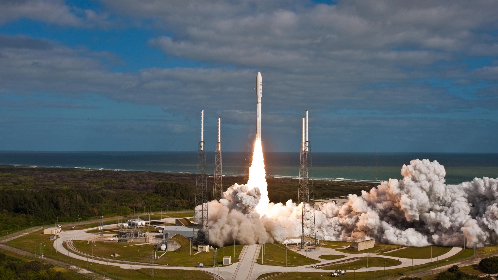

7 min read
On November 26, 2011, a new chapter in Martian exploration began with the launch of the Mars Curiosity Rover. Destined for the Gale Crater, its mission was to investigate the planet's climate and geology and assess whether Mars had ever offered environmental conditions favorable for microbial life. Since its innovative sky-crane landing in August 2012, Curiosity has roamed the Martian surface, conducting a series of groundbreaking studies that have not only enhanced our understanding of Mars but also ignited imaginations worldwide about the possibilities of life beyond Earth.

Unlike any before it, the Mars Curiosity Rover was designed as a sophisticated mobile laboratory, capable of navigating the Martian terrain while conducting complex scientific investigations. Its suite of instruments allows for the analysis of soil, rock, and atmospheric samples, providing comprehensive data about the planet's past and present environments. Curiosity's mission objectives are broad, seeking answers to fundamental questions about Mars' potential to harbor life and the processes that have shaped the Martian landscape over billions of years.
Curiosity's exploration site, Gale Crater, was strategically chosen for its rich geological features, which are believed to hold clues about Mars' environmental history. The rover's journey has taken it from the crater's floor up the layers of Mount Sharp, each stratum offering a snapshot of a different era in Mars' history. Through the analysis of sedimentary layers, Curiosity has revealed evidence of ancient water flows and lakebeds, suggesting that Gale Crater once contained environments that could have supported microbial life.
Among the rover's numerous discoveries, the detection of organic molecules stands out as particularly significant. These carbon-containing compounds are essential to life as we know it and their presence on Mars suggests the planet may have had the necessary components for life to emerge. Additionally, Curiosity's findings of fluctuating methane levels in the atmosphere and complex organic compounds in Martian soil add layers of complexity to the question of life on Mars. The insights gained from Curiosity's mission have profound implications for future exploration of Mars. By identifying environments that could have supported life, Curiosity has helped to refine the search criteria for missions like the Mars 2020 Perseverance Rover, which seeks signs of ancient microbial life. Moreover, Curiosity's analyses contribute to our understanding of Mars' climate and geology, informing the design of future human missions to the Red Planet. As Curiosity continues its exploration of Gale Crater, it builds on a legacy of discovery and exploration that stretches back to the earliest days of Mars exploration. Each sol, or Martian day, spent traversing the rugged landscape of Mars brings new findings and deeper insights into the planet's past. The Mars Curiosity Rover's mission, far from merely unveiling the secrets of the Red Planet, represents humanity's insatiable quest for knowledge and our unyielding drive to explore the unknown, laying the groundwork for the future of interplanetary exploration.